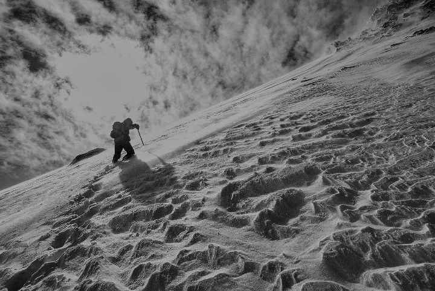

Elämän ja kuoleman markkinat

“It's not what happens to you, but how you react to it that matters.”— Epictetus
Oregonin Mount Hoodia pidetään helppona vuorena kiivettäväksi. Sille noustaan ilman merkittävää kiipeilykokemusta tai kummempia varustuksia. Neljän kaverin porukka oli jo aamupäivällä juhlistanut huipun valloittamistaan ja lähtenyt laskeutumaan. Joukon kokenein kiipeilijä varmisti kolmea muuta ylimpänä. He olivat kaikki kiinni samassa köydessä ja laskeutuivat kymmenen metrin välein.
Miehet olivat harjoitelleet etukäteen mitä tehdä, jos joku liukastuisi ja lähtisi valumaan alas vuorenrinnettä. Tuolloin hän huutaisi ”putoaa!”, jolloin muut tietäisivät välittömästi heittäytyä alas, iskeä hakkunsa vuoren seinään ja pitää kiinni kaikin voimin.
Kun kolme ensimmäistä oli päässyt liikkeelle huipulta, oli kokeneimman vuoro aloittaa laskeutuminen. Hän irrotti kiinteän varmistuksensa. He olivat nyt kaikki toisissaan kiinni, mutta kukaan heistä ei ollut kiinteästi kiinni vuoressa. Samalla hänen askeleensa lipesi. Mies lensi selälleen rinteeseen ja lähti pää edellä valumaan seinämää alas.
Köysivarmistus on teoriassa toimiva. Ylin kiipeilijä ei vaan saisi pudota. Ei ainakaan niin, ettei hän pysty hidastamaan omaa putoamistaan. Köysi keräsi voimaa, joka vei ensin mukaan toisen kiipeilijän, sitten kolmannen, ja lopuksi viimeisenkin.
Laurence Gonzales kertoo muun muassa tämän tositarinan kirjassaan Deep Survival – Who Lives, Who Dies, and Why. Se on kirja onnettomuuksista, joita ajoittain tapahtuu, kun ihmiset vievät itsensä kohtaamisiin luonnonolosuhteiden kanssa. Oli kyseessä vuorikiipeily, vapaalasku, vaellukset luonnonpuistoissa, lentäminen tai purjehdus, onnettomuuksia vain tapahtuu. Se on riski, joka otetaan, jotta kokemuksen riemun saisi kokea.
Kirjaa lukiessaan tulee eri esimerkeistä toistuvasti mieleen markkinat ja sijoittaminen. Deep Survival on mielestäni erinomainen sijoituskirja, vaikkei se sellaiseksi ole tarkoitettukaan.
Onnettomuudet ovat harvinaisia, mutta aika ajoin niitä sattuu. Samoin markkinan korjauksia. Ne ovat täysin normaaleja, markkinan kompleksiseen systeemiin sisäänrakennettuja ominaisuuksia. Suurimman osan ajasta mitään vakavaa ei tapahdu. Se luo systeemissä toimiville (kiipeilijöille, sijoittajille jne.) haasteen. He alkavat uskoa, että systeemissä vallitsee järjestys, eikä ole syytä huoleen.
Kaikki voikin olla pitkään hyvin, kunnes systeemin sisältä eri voimien ja muuttujien ennakoimattomat yhteensattumat saavat aikaan ketjureaktion, joka juuri sopivassa hetkessä ja paikassa voi johtaa katastrofiin. Mount Hoodilla tuo kokenein kiipeilijä oli usean kerran aikaisemminkin liukastunut ja kaatunut, mutta joka kerta hän oli saanut hakkunsa upotettua pitävästi vuoren seinään. Koskaan aikaisemmin hän ei ollut kaatunut selälleen.
Markkinoilla voi vallita hyvänolon tunne pitkän talouden ja varallisuusarvojen nousukauden jälkeen. Ostamme korkealle arvostettuja kasvuosakkeita kovan nousun jälkeenkin, sillä uskomme, että tilanne jatkuu kuten ennen. Kun asiat menevätkin pieleen, emme ymmärrä mitä tapahtuu. Syytämme huonoa tuuria, vaikka tosiasiassa kovan nousun jälkeen, etenkin kalliiden osakkeiden isotkin korjaukset, ovat täysin normaaleja.
Etukäteen on vaikea ennakoida mistä yksittäisestä alkumuuttujasta johtuen, ja etenkin milloin, talouden tai markkinoiden käänne tapahtuu. Pienikin muutos tai talouden raja-arvon ylittäminen voi olla se ensimmäinen kaatuva dominopalikka, joka saa aikaan ketjureaktion, jonka seurauksia voi reaaliajassa olla vaikea ymmärtää.
Gonzales siteeraa Charles Perrowia, joka kirjassaan Normal Accidents esittää, että yritykset tehdä tällaisesta kaoottisesta systeemistä turvallisempi tekevät siitä vain enemmän monimutkaisen ja siten alttiimman onnettomuuksille. Kiipeilijät olisivat olleet paremmassa turvassa, jos he olisivat laskeutuneet ilman toisiinsa sidottua köyttä. Jos yksi olisi pudonnut, se ei olisi vienyt muita mukanaan.
Pankkien kiristyneellä sääntelyllä on ollut, vaikkakin hyvät tarkoitusperät, myös ennakoimattomia seurauksia. Pankkien oman taseen käytön pienentymisen myötä markkinoilta on poistunut takaajia, jotka aikaisemmin olisivat asettuneet tukemaan tarjouskirjan ostolaitaa isompien markkinalaskujen hetkellä. Nykyään liikkeet voivat olla erittäin nopeita likviditeetin ollessa ohutta, kuten nähtiin viime joulukuussa.
Riskinotto voi olla kivaa, mutta henkensä menettäminen sitä tuskin on. Gonzales kertoo tarinan, jossa kaveriporukka päättää ajaa moottorikelkoillaan vuoren rinnettä ylös, vaikka heitä nimenomaan oli sinä päivänä varoitettu lumivyöryistä. Kavereista kaksi menehtyi. Mikä sai heidät varoituksista huolimatta tekemään niin?
Heillä oli kokemus siitä adrenaliinin voimistamasta hyvän olon tunteesta, joka syntyy, kun ajaa kovaa vauhtia vuoren rinnettä ylös. Heillä ei kuitenkaan ollut kokemusta lumivyöryyn joutumisesta. Älyllisellä tasolla ymmärrämme, mitä riskit tarkoittavat. Jos meillä ei kuitenkaan ole omakohtaista kokemusta siitä, mitä tuntemuksia kropassa eri riskien realisoituminen aiheuttaa, emme tosiasiallisesti pysty välttämättä reagoimaan tilanteen edellyttämällä tavalla.
Lihasmuisti on paras muisti. Siksi neljävuotias pelastuu todennäköisemmin hengissä yksin metsässä kuin kokenut erämies. Pieni lapsi hakeutuu luontaisesti vaistojensa varassa puun alle suojaan. Lapsi lepää, kun häntä väsyttää. Erämies egonsa ajamana yrittää voittaa olosuhteet, eksyy pahemmin, menettää voimansa ja menehtyy parissa päivässä. Gonzalesin mukaan usein ”ekspertti” on sellainen henkilö, joka on tehnyt asioita väärin, mutta joka on säästynyt vahingoilta useammin kuin joku toinen.
Riippuen milloin ihminen on syntynyt, milloin hän on aloittanut sijoittamisen, silloiset yhteiskunnan, talouden ja pörssin olosuhteet muokkaavat hänen kokemuksiaan. 1970-luvun korkean inflaation tai 1990-luvun laman aikoihin kasvanut voi suhtautua riskin ottoon eri lailla kuin 2010-luvulla kasvanut.
Teknokuplan ja finanssikriisin läpi elänyt, ja sijoitussalkkunsa puolittumisen fyysisenä pahoinvointina kokenut, voi nähdä kryptovaluutat ja kannabisosakkeet eri valossa kuin vain nousukaudella sijoittanut millenniaali. On vanhoja kiipeilijöitä ja on rohkeita kiipeilijöitä. Ei kuitenkaan ole vanhoja, rohkeita kiipeilijöitä. Tämän voi soveltaa myös sijoittamiseen.
Gonzales tarjoaa kirjassaan neuvoja oikean selviytyjän mielen ja asenteen valjastamiseksi. Seuraavassa näistä sovellettuna neljä oppia sijoittajalle:
1. Vältä riskejä, jotka toteutuessaan vievät vararikkoon tai pahemmassa tapauksessa velkataakkaan. Luonnon voimien kanssa ihminen voi tehdä kaiken oikein ja silti menehtyä. Sijoittaessa voi tehdä kaiken oikein ja silti hävitä rahaa. Jos kuitenkin asiat tekee jokseenkin oikein, ei todennäköisesti mene konkurssiin. Pääomat voivat puolittua indeksisijoittamisessakin, mutta nollaan ne tuskin menevät. Jos välttää velkavipua ja hype-teemoja sekä hajauttaa sijoituksensa, niin säästyy suurimmalta pahalta.
2. Tiedä mitä olet tekemässä. Jos metsään haluat mennä nyt, niin takuulla yllätyt, jos et ole valmistautunut etukäteen. Varustus, ympäristö, sääolosuhteet – mitä enemmän tiedät ja mitä paremmin olet valmistautunut, sen parempi. Samoin sijoittamisessa. Tiedä oma tuottotavoitteesi, sijoitushorisonttisi ja riskinkantokykysi. Tee pitkän tähtäimen suunnitelma, jolla tavoitteet on mahdollista saavuttaa. Pidä tavoite aina kirkkaana mielessä ja pitäydy suunnitelmassasi. Vältä impulsiivisia sijoituspäätöksiä.
3. Pidä mielesi avoimena ja opi historiasta. Gonzales kehottaa pitämään mielen kuten aloittelijalla; avoimena ja alttiina uuden oppimiselle. Hän kehottaa oppimaan muiden virheistä mm. lukemalla onnettomuusraportteja. Ainoastaan, jos olet halukas ja kyvykäs oppimaan uusia asioita voit kehittyä. Mieti, mikä voisi mennä pieleen. Opiskele markkinan historiasta. Historia ei aina toista itseään, mutta monasti se mukailee itseään. Tiedosta kuinka usein markkinat keskimäärin ovat korjanneet 10%, 20% tai 50%. Sisäistä itsellesi, että korjaukset ovat aivan normaali markkinan ominaisuus. Opi muiden sijoittajien virheistä. Etsi yli ajan toimineita tapoja ja sääntöjä ja pyri vahvistamaan niiden vaikutusta sijoitusstrategiassasi.
4. Ole nöyrä, mutta optimisti. Jos olet menestynyt toisella liiketoiminnan saralla, älä kuvittele, että tietenkin osaat myös osakekeinottelun. Jos viime aikaiset sijoituksesi ovat olleet erityisen menestyksekkäitä, tiedosta, että tuurillakin on osansa tuotoissa. Et pysty vaikuttamaan asioihin, joita markkina tiellesi heittää. Voit ainoastaan vaikuttaa omaan suhtautumiseesi niihin. Ole nöyrä ja sisäistä oma tietämättömyytesi tai muuten markkinat nöyristävät sinut lopulta varmasti. Muista kuitenkin, että vielä koskaan aiemmin maailma ei ole loppunut tai ihmiskunta tuhoutunut. Optimistit ovat aina voittaneet. Ja todennäköisesti optimistit voittavat jatkossakin.